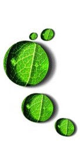

- Home
- About this initiative
- 7th Framework Programme
- Success Stories
- Project Coordination
- Partners
- Contact Us
Partner Search
facility
BIO-NET supports the successful participation of research centers, universities and innovative SMEs in EU-funded FP7 "Knowledge Based Bio-Economy" research projects.
Funded by the European Commission, the BIO-NET project combines the efforts of National Contact Points for the FP7 KBBE theme in all European countries. By joint collaboration in activites that have a high impact when performed on an international level, BIO-NET aims to provide high quality support for organisations that wish to participate in FP7 projects.
What can BIO-NET do to help entrepreneurs and researchers get involved in FP7?
- We can provide you with information on FP7 by organising dedicated info days. For newcomers we have a series of basic trainig sessions, particularly focussed on SMEs and young researchers. Please check our Events page for more details.
- We can help you on an individual basis and provide feedback on your project ideas. Please check the Contacts page to find the National Contact Point in your country.
- We can help you find project partners throughout Europe. We have a database with high quality profiles of interested organsisations. Please check the Partner Search facility to find out more.
See all Open Partner Searches at one glance!
Find in one place all the partner searches that are currently open in the BIO-NET database!
Look at the list without registration. In order to get further details of the partner searches that interest you, go to > More information and log in to the service. In case you are not registered yet, you can easily do it here
Have your say on EU financial rules!

The European Commission has launched a public consultation inviting beneficiaries and managers of public funds to send in their views on how to make the rules for grants and contracts more effective for everyone.
This is especially important as the EU begins to prepare the ground for a new generation of programmes in 2014.
Open until 18 December 2009 - More info
26/11/2009: European Commission launches consultation on EU2020
20/11/2009: European Commission needs expert evaluators
25/10/2009: BIO-NET has organised a training on "Advanced financial issues of FP7 and financial rules necessary for implementing a project"!
09/02/2010 : The 2010 International Conference on Biotechnology and Food Science (India)
23/03/2010 : Brokerage Event: Taste, Nutrition and Health (France)